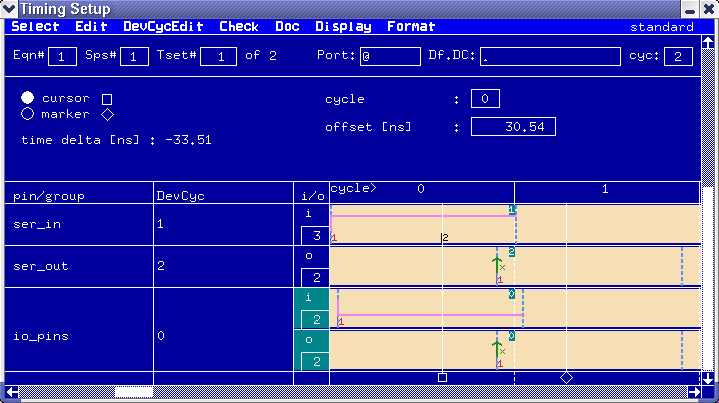

Using the Marker and Cursor
The system provides a marker and a cursor to help you make accurate timing comparisons across several device cycles.
To get the marker and cursor, pick marker in the Select pulldown menu. Alternatively, click the blue area underneath the Device Cycle Edit Area.
The Cursor and Marker Overlay appears in the Timing Entry Area of the Timing Setup window (see The Timing Setup Window), together with a cursor and a marker in the Device Cycle Edit Area. This is shown in the figure below.

The cursor and marker are labelled by a square and a diamond sign respectively. The signs are displayed underneath the Device Cycle Edit Area, in the Marker/Cursor Selection Space.